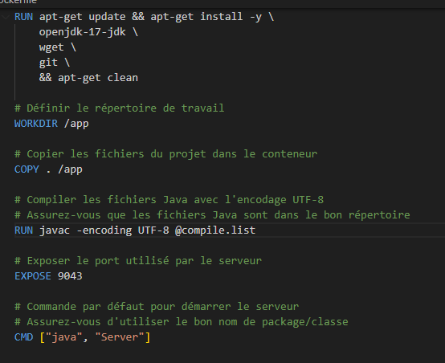

1. Utilisation d’un système multitâche / multiutilisateurs
Le serveur de la socket que j’ai créé permet à plusieurs utilisateurs de se connecter. Si un utilisateur envoie un message, les autres le reçoivent.
2. Identification des composants d’un système numérique
Dans le cadre du projet SAE 1.03, j’ai dû créer une machine virtuelle et configurer tous ses composants sur le logiciel VirtualBox : mémoire vive, processeur, disque dur virtuel, carte réseau. Ensuite, j’ai installé une interface graphique avec le clavier en français.
3. Installation et configuration d’un système d’exploitation
Lors de la SAE 1.03, nous avons créé une machine virtuelle sous Linux à partir de zéro, jusqu’à obtenir un système avec une interface graphique et plusieurs applications installées.
4. Déploiement de services réseau avec Docker
Je sais installer des services réseau de base et les configurer. Pour rendre mon projet Socket accessible à tous, je pourrais le déployer sur Docker. Voici un exemple de configuration que je pourrais utiliser :

5. Connaissances sur l’architecture des systèmes et réseaux
J’ai appris à configurer un système réseau, par exemple le service SSH pour se connecter à un serveur.

6. Programmation shell et mesures correctives
Je suis capable de créer un programme Shell basique. Dans cet exemple, le script vérifie si un fichier existe et affiche les droits si c’est le cas.

7. Adaptation et autocritique
Je sais identifier mes points forts et mes axes d’amélioration pour progresser dans mes apprentissages et mes réalisations.